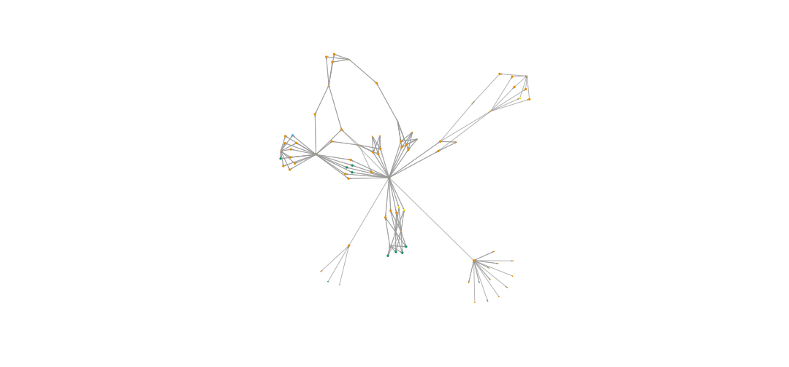
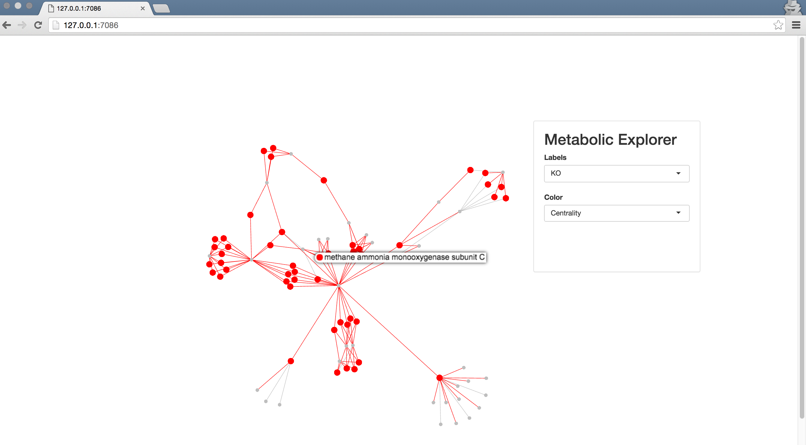

Background
- Neo4j is a noSQL database which models its data as a graph
- latest version is 2.3.2
Wesley GOI
Graph Enthusiast
IGRAPH to plot and visualise data locally.SHINY and a HTMLTOOLS package SIGMA to interactively visualise graph data in a dashboard


MATCH
(A:girl) -[:likes]-> (B:boy)
RETURN
A, B
MATCH
(A: girl {name: 'ally'})-[:likes]->(B: boy)
RETURN
B
library(RNeo4j)
graph2 = startGraph("http://localhost:7474/db/data/")
Set the following if you wish to DISABLE user password login:
dbms.security.auth_enabled=false to in conf/neo4j-server.properties.
MATCH (label: {property: something}) -- (label2: {property: something})
extract(x IN collection | x.property))
reduce(s = "", x IN collection | s + x.property))
Following code:
(aa) --> (bb) --> (cc) prop belonging to all nodes connected nodes with label3MATCH
(aa:label { prop: "some prop" }) --> (bb:label2) --> (cc:label3)
RETURN
reduce(sum = 0, property in collect(cc.prop) | sum + property) AS finalSum
more can be found here
bob = graph2 %>%
createNode("Person",
name = "Bob",
age = 24,
kids = c("Jenny", "Larry"))
#attributes(bob)$self

alice = createNode(graph2, "Person", name = "Alice")
#attributes(alice)$self
charles = createNode(graph2, "Person", name = "Charles")
#attributes(charles)$self
createRel(alice, "WORKS_WITH", bob)
createRel(bob, "KNOWS", charles, since = 2000, through = "Work")
createRel(alice, "KNOWS", charles, list(since = 2001, through = "School"))

MATCH
(noi:Person {name:'Bob'})
RETURN
noi
noi
Person,
name of value BobnodeOfInterest <- graph2 %>%
getNodes(
"
MATCH
(noi:Person {name:'Bob'})
RETURN
noi")
Node returned by the query can be saved as a variable in R.
## List of 3
## $ : chr "Bob"
## $ : int 24
## $ : chr [1:2] "Jenny" "Larry"
If you know the property you're interested in, you could plan the query to return it as a data.frame
df = graph2 %>%
cypher(
"MATCH
(bob:Person {name:'Bob'})
RETURN
bob.name,
bob.age
")
## bob.name bob.age
## 1 Bob 24
Using cypher get the subgraph which you're interested in and return as an edge list.
UNWIND
{names} AS namelist
MATCH
(p:Person {name:namelist}) -- (connection:Person)
RETURN
p.name,
connection.name
#Edgelist extraction
edgelist = graph2 %>% cypher(query
, list(names = c("Alice", "Bob", "Charles"))
)
edgelist %<>% setNames(c("from", "to"))
## from to
## 1 Alice Bob
## 2 Alice Charles
## 3 Alice Bob
## 4 Alice Charles
## 5 Alice Bob
## 6 Alice Charles
g = graph_from_data_frame(edgelist)
plot(g, vertex.size=3, edge.arrow.size=0.5)

metabgraph <- startGraph("http://metamaps.scelse.nus.edu.sg:7474/db/data/",
user = cred$user,
pass = cred$pass)

UNWIND
{ kos } AS koss
OPTIONAL MATCH
(ako:ko {ko: koss.ko})<--(cpd:cpd)
RETURN
cpd.cpd AS child,
ako.ko AS parent,
ako.definition AS parentName,
ako.name AS parentSym,
cpd.name AS childName,
cpd.name AS childSym
nitrogenMetabolism = metabgraph %>%
cypher(query,list(kos = koi))
child parent parentName parentSym childName childSym
1: cpd:C00011 ko:K18246 carbonic anhydrase 4 [EC:4.2.1.1] CA4 CO2; CO2;
2: cpd:C00011 ko:K18245 carbonic anhydrase 2 [EC:4.2.1.1] CA2 CO2; CO2;
Make data.frames: Vertices and Edgelist
nodes = rbind(
setNames(unique(select(nitrogenMetabolism, parent, parentName)), c("id", "name")),
setNames(unique(select(nitrogenMetabolism, child, childName)), c("id", "name"))
)
nitroMetab = graph_from_data_frame(nitrogenMetabolism[,1:2], T, nodes)
plot(nitroMetab)

V(nitrogenMetab)$color = nitroMetab %>%
components("weak") %$%
membership %>%
unname %>%
as.factor
plot(nitrogenMetab, vertex.label="")

noi = c("Formate", "HCO3") %>%
lapply(function(x){
which(grepl(x, V(nitrogenMetab)$Definition))
})
shortpath = nitrogenMetab %>%
shortest_paths(noi[[1]], noi[[2]], mode="all") %$%
vpath[[1]] %>%
as.integer
mapply(function(one, two){
E(nitrogenMetab)[one %--% two]$color <<- "red"
E(nitrogenMetab)[one %--% two]$width <<- 5
},
one = shortpath %>% head(n=-1),
two = shortpath %>% tail(n=-1),
SIMPLIFY = FALSE
) %>% invisible
plot(nitrogenMetab, vertex.label="")

#Requires two libraries.
devtools::install_github("etheleon/sigma") #Modified version of the original sigma0
devtools::install_github("etheleon/metamaps")

## R version 3.1.1 (2014-07-10)
## Platform: x86_64-apple-darwin13.1.0 (64-bit)
##
## locale:
## [1] en_US.UTF-8/en_US.UTF-8/en_US.UTF-8/C/en_US.UTF-8/en_US.UTF-8
##
## attached base packages:
## [1] stats graphics grDevices utils datasets methods base
##
## other attached packages:
## [1] XML_3.98-1.3 shiny_0.12.2 magrittr_1.5
## [4] dplyr_0.4.1 MetamapsDB_0.0.2 igraph_1.0.1
## [7] visNetwork_0.1.0 digest_0.6.8 RNeo4j_1.6.1
## [10] slidifyLibraries_0.3.1 slidify_0.4.5 setwidth_1.0-4
## [13] colorout_1.0-3
##
## loaded via a namespace (and not attached):
## [1] assertthat_0.1 codetools_0.2-14 curl_0.9.3
## [4] DBI_0.3.1 evaluate_0.7.2 formatR_1.2
## [7] htmltools_0.2.6 htmlwidgets_0.5.1 httpuv_1.3.3
## [10] httr_1.0.0 jsonlite_0.9.16 knitr_1.10.5
## [13] markdown_0.7.7 mime_0.3 parallel_3.1.1
## [16] R6_2.1.1 Rcpp_0.12.0 rjson_0.2.15
## [19] RJSONIO_1.3-0 sigma_1.0 stringi_0.5-5
## [22] stringr_1.0.0 tools_3.1.1 whisker_0.3-2
## [25] xtable_1.7-4 yaml_2.1.13